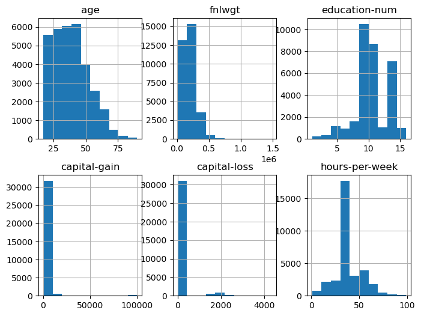
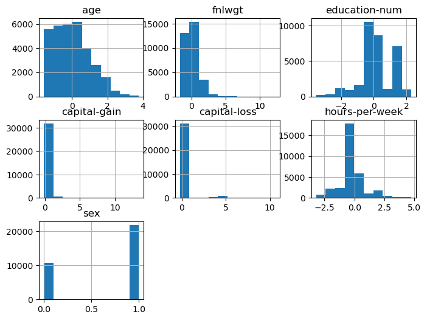
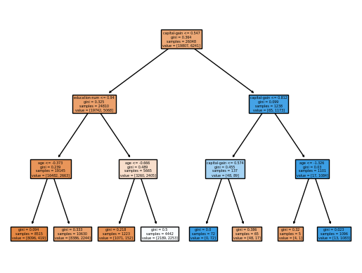

Decision Tree Classification
Posted on Mon 07 November 2022 in data science
Do you want to build a decision tree classifier?
In this blog entry, we'll construct a decision tree using Sci-Kit Learn. I selected the data set: Adult. (1996) from the UCI Machine Learning Repository. The data set contains categorical and numerical data about individuals and contains a binary, categorical variable that categorizes the individuals as making less than (or great than) 50 thousand dollars per year. There are no missing values, but the categorical variables must be encoded using dummy variables and do some standard scaling.
The data set has been used in a variety of papers on arxiv, references are available as the UCI Machine Learning Repository. The goal of this blog post is to utilize Sci-Kit learn to build a decision tree and understand how decision trees are constructed.
What happens in a classification decision tree?
We have a data set with \(N\) total observations \((x_i, y_i)\) where \(x_i \in \mathbb{R}^n\) and \(y_i \in {0,1}\). We divide \(\mathbb{R}^n\) into \(m\) regions. The region \(R_m\) corresponds to a leaf in the tree and contains \(N_m\) observations. All observations in the region will be classified the same way. These regions are in correspondence with the terminal nodes of a tree \(T\). Each node in the tree will represent a split in the data set. For example, a split \(\theta = (j, t)\) is described by the variable, \(j\) and a threshold \(t\). All observations where \(x_j <t\) are placed into a region \(R_l\) and all observations with \(x_j < t\) are placed into \(R_r\).
I use the Gini index in my example.
The Gini index is one of three common measures used to construct a loss function. Let \(\hat{p}_{mk}\) be the proportion of class \(k\) observations in the region \(R_m\). That is:
More specifically, if there are 100 observations in a region \(m\) and ten are of type \(0\), then \(\hat{p}_{m0}= 1/10\).
Using the Gini index, at the terminal node \(m\), we define
For our case (with only 2 possible classifications),
This is the node impurity measure. Each additional node splitting (creating more terminal nodes) will increase the node purity. A pure node will have \(\hat{p}_{mk}=1\) for some \(k\), meaning that every observation in the region belongs to the same class.
From the impurity measure, the loss function, \(H(T)\) is constructed is based on the terminal nodes of the tree. So, if our tree has \(m\) terminal nodes:
We want to choose the the tree \(T\) that minimizes \(H(T)\). So, how do we do that? Roughly, a greedy algorithm chooses the best possible split at a node \(m\). Suppose that \(n_m\) observations are in the node. We choose a split \(\theta\) where \(n_m^l\) observations are placed in the new region \(R_L\) and \(n_m^r\) observations are placed in the new region \(R_r\) The loss function for the proposed split:
Scikit Learn states that it uses an optimized version of the CART algorithm and mimimizes this value.
I've discussed what the decision tree classifier does, but not how. It may be worthwhile to look at the following articles, documentation, and books. I also do not discuss cost complexity pruning.
-
Xgboost - https://arxiv.org/pdf/1603.02754.pdf
-
SciKit - Learn - https://scikit-learn.org/stable/modules/tree.html#bre
-
Elements of Statistical Learning - T. Hastie, R. Tibshirani and J. Friedman.
Packages
The packages that I will be using are below. The packages are arranged in (roughly) the order that they are used.
import pandas as pd
import matplotlib.pyplot as plt
from sklearn.preprocessing import OrdinalEncoder, StandardScaler
from sklearn.model_selection import train_test_split
from sklearn.compose import make_column_selector, make_column_transformer
from sklearn.compose import ColumnTransformer
from sklearn import tree
from sklearn.tree import export_text
from sklearn.metrics import recall_score, precision_score, confusion_matrix
The column names are added manually (since these are not included in the adult.data file).
col_names=["age",
"workclass",
"fnlwgt",
"education",
"education-num",
"marital-status",
"occupation",
"relationship",
"race",
"sex",
"capital-gain",
"capital-loss",
"hours-per-week",
"native-country","wage"]
my_df =pd.read_csv("adult.data",sep=",", header = 0, names=col_names)
Next, look at the data. Many of the variables are categorical and not numerical. I made the decision to eliminate the categorical variables except sex and the response variable, wage.
my_df.info()
<class 'pandas.core.frame.DataFrame'>
RangeIndex: 32560 entries, 0 to 32559
Data columns (total 15 columns):
# Column Non-Null Count Dtype
--- ------ -------------- -----
0 age 32560 non-null int64
1 workclass 32560 non-null object
2 fnlwgt 32560 non-null int64
3 education 32560 non-null object
4 education-num 32560 non-null int64
5 marital-status 32560 non-null object
6 occupation 32560 non-null object
7 relationship 32560 non-null object
8 race 32560 non-null object
9 sex 32560 non-null object
10 capital-gain 32560 non-null int64
11 capital-loss 32560 non-null int64
12 hours-per-week 32560 non-null int64
13 native-country 32560 non-null object
14 wage 32560 non-null object
dtypes: int64(6), object(9)
memory usage: 3.7+ MB
Next, sort out the numerical and categorical variables of interest. Pull out the response variable \(y\) and do some descriptive statistics.
num_cols_subset = ['age', 'fnlwgt','education-num', 'capital-gain', 'capital-loss', 'hours-per-week']
cat_cols_subset =['sex']
X=my_df[num_cols_subset+cat_cols_subset]
y=my_df['wage']
X.hist(layout=(2,3), figsize=(8,6))
array([[<AxesSubplot: title={'center': 'age'}>,
<AxesSubplot: title={'center': 'fnlwgt'}>,
<AxesSubplot: title={'center': 'education-num'}>],
[<AxesSubplot: title={'center': 'capital-gain'}>,
<AxesSubplot: title={'center': 'capital-loss'}>,
<AxesSubplot: title={'center': 'hours-per-week'}>]], dtype=object)

my_df['age'].describe()
count 32560.000000
mean 38.581634
std 13.640642
min 17.000000
25% 28.000000
50% 37.000000
75% 48.000000
max 90.000000
Name: age, dtype: float64
Check that there are only two classes for the 'wage' and 'sex' variables. Observe that only a third of our observations fall into the female sex category. (If this was a serious analysis, this immediately means that this sample is not representative of the population.) Also, observe that \(2/3\) of the observations have 'wage' as '<=50K'. This will have ramifications later.
print(X['sex'].unique())
print(X['sex'].value_counts())
print(y.unique())
y.value_counts()
[' Male' ' Female']
Male 21789
Female 10771
Name: sex, dtype: int64
[' <=50K' ' >50K']
<=50K 24719
>50K 7841
Name: wage, dtype: int64
Scale and transform the variables
Now, use a built-in function from Scikit Learn to encode 'wage' (\(y\)) as a dummy variable. We load the encoder, set up the categories to be encoded, test the encoder and then encode y. The array below shows that '<=50K' is encoded as a zero. The preprocessing methods are in the module sklearn.preprocessing.
enc = OrdinalEncoder()
y_enc = [[' <=50K'],[ ' >50K']]
enc.fit(y_enc)
test=[[' <=50K'],[ ' >50K'], [' <=50K'],[ ' >50K']]
enc.transform(test)
array([[0.],
[1.],
[0.],
[1.]])
y=y.to_numpy()
y=y.reshape((32560,1))
y=enc.transform(y)
Build a pipeline to transform the rest of our variables. Review the data types of the variables in our observation data frame. We'll cast 'sex' as a category variable.
print(X.dtypes)
X=X.astype({'sex':'category'})
age int64
fnlwgt int64
education-num int64
capital-gain int64
capital-loss int64
hours-per-week int64
sex object
dtype: object
Check the number of features of each type to ensure that the casting is completed successfully.
n_cat_features = X.select_dtypes(include="category").shape[1]
n_cat_features
1
n_num_features = X.select_dtypes(include="number").shape[1]
n_num_features
6
Set up our column selectors and demonstrate that the num_selector pulls out the numerical features. Then, we choose the processor type for each data type and construct the pipeline.
cat_selector = make_column_selector(dtype_include='category')
num_selector = make_column_selector(dtype_include='number')
print(num_selector(X))
['age', 'fnlwgt', 'education-num', 'capital-gain', 'capital-loss', 'hours-per-week']
cat_processor = OrdinalEncoder()
num_processor = StandardScaler()
linear_preprocessor= make_column_transformer((num_processor, num_selector),(cat_processor,cat_selector))
linear_preprocessor
X = linear_preprocessor.fit_transform(X)
Now, examine how the pipeline changed our data. (I've also put the labels back on the dataframe.) We see that 'sex' is now a numerical variable. The other variables have been scaled to have a mean of zero and unit variance.
X=pd.DataFrame(X, columns = num_cols_subset+cat_cols_subset)
X.hist(layout=(3,3), figsize=(8,6))
array([[<AxesSubplot: title={'center': 'age'}>,
<AxesSubplot: title={'center': 'fnlwgt'}>,
<AxesSubplot: title={'center': 'education-num'}>],
[<AxesSubplot: title={'center': 'capital-gain'}>,
<AxesSubplot: title={'center': 'capital-loss'}>,
<AxesSubplot: title={'center': 'hours-per-week'}>],
[<AxesSubplot: title={'center': 'sex'}>, <AxesSubplot: >,
<AxesSubplot: >]], dtype=object)

Decision Tree Construction
Create the training and testing sets for our decision tree. Then, create the decision tree with a maximum depth of three.
X_train, X_test, y_train, y_test = train_test_split(X,y, test_size=0.2, random_state=42)
clf = tree.DecisionTreeClassifier(max_depth=3)
clf = clf.fit(X_train, y_train)
tree.plot_tree(clf, filled = True, feature_names=num_cols_subset + cat_cols_subset)
plt.show()

We'll use the export tree command to examine where the splits occur. At the root node, the data splits on the capital gains. We see additional splits on age and education. This makes sense given that capital gains require stock ownership, which is more likely to occur if your income is over 50K.
report = export_text(clf, feature_names=num_cols_subset+cat_cols_subset)
print(report)
|--- capital-gain <= 0.55
| |--- education-num <= 0.94
| | |--- age <= -0.37
| | | |--- class: 0.0
| | |--- age > -0.37
| | | |--- class: 0.0
| |--- education-num > 0.94
| | |--- age <= -0.67
| | | |--- class: 0.0
| | |--- age > -0.67
| | | |--- class: 1.0
|--- capital-gain > 0.55
| |--- capital-gain <= 0.81
| | |--- capital-gain <= 0.57
| | | |--- class: 1.0
| | |--- capital-gain > 0.57
| | | |--- class: 0.0
| |--- capital-gain > 0.81
| | |--- age <= -1.33
| | | |--- class: 0.0
| | |--- age > -1.33
| | | |--- class: 1.0
How did the tree perform?
Now, we need to evaluate how well our tree has performed. We'll compare the percentage of the observations that are correctly predicted with both the testing and training data. We see that both have about 80% accuracy. This suggests that the model is not overfitted. (Here, cost complexity pruning is required to do a complete analysis, but we do not have a situation where the training data has a high accuracy score and the test data has a low accuracy score.)
print(clf.score(X_train, y_train))
print(clf.score(X_test, y_test))
0.8067030098280098
0.8078931203931204
We look at the confusion matrix, the recall, and the precision. The confusion matrix has the form:
The overall accuracy is:
The recall is the ratio of true positives to total positives. This is:
The precision is the ratio true positives out of all positive results.
If our goal is to find candidates with income over 50K for an email campaign, we'd focus on the recall. If our advertising budget is limited, we may then want to focus on the precision. The specificity is \(TN/N\). We see that the recall is about 0.57 and the precision is about 0.62. Since about 66% of the observations in the data set are in the category '<=50K', we could artificially increase the precision and specificity by predicting all individuals are in the category '<=50K', except for one individual that we are very sure are in the class '>=50K'.
y_pred = clf.predict(X_test)
print(confusion_matrix(y_test,y_pred))
print(recall_score(y_test,y_pred))
print(precision_score(y_test,y_pred))
[[4346 566]
[ 685 915]]
0.571875
0.6178257933828494